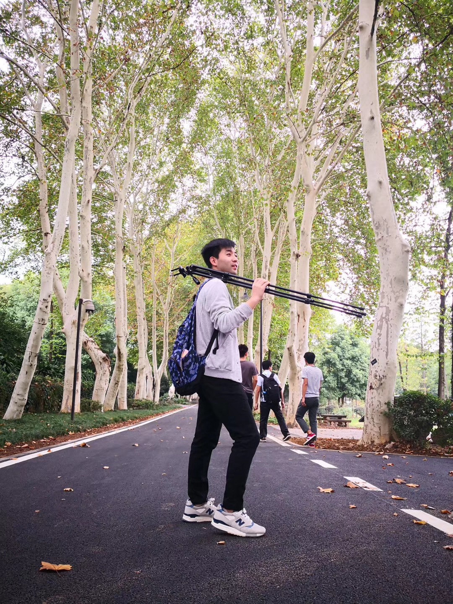

Xin Wang
Researcher · Shanghai AI Laboratory
hsinwang22 [at] gmail [dot] com
I’m currently a Researcher at Shanghai AI Laboratory, collaborating with Dr. Yan Teng and Prof. Xia Hu. Previously, I received my Ph.D. degree from FVL Lab in the College of Computer Science and Artificial Intelligence, Fudan University, supervised by Prof. Xingjun Ma and Prof. Yu-Gang Jiang.
Recently, I am broadly interested in safety and privacy aspects of machine learning, with a recent focus on large language models, vision-language-action models, and world models.
Feel free to reach me at hsinwang22 [at] gmail [dot] com,
if you are interested in potential collaborations.
Publications
2026
OpenRT: An Open-Source Red Teaming Framework for Multimodal LLMs
Technical Report, 2026
NAP-Tuning: Neural Augmented Prompt Tuning for Adversarially Robust Vision-Language Models
IEEE Transactions on Pattern Analysis and Machine Intelligence (TPAMI), 2026
Towards Context-Invariant Safety Alignment for Large Language Models
International Conference on Machine Learning (ICML), Seoul, South Korea, 2026
FakeWorld 1.0: An Omni modal Benchmark for Fake Media and Content
International Conference on Machine Learning (ICML), Seoul, South Korea, 2026
AgenticEval: Toward Agentic and Self-Evolving Safety Evaluation of Large Language Models
Findings of the Annual Meeting of the Association for Computational Linguistics (ACL), San Diego, USA, 2026
Probing the Safety Robustness of LLMs in Latent Space
Annual Meeting of the Association for Computational Linguistics (ACL), San Diego, USA, 2026
Adversarial Prompt Distillation for Vision-Language Models
IEEE International Conference on Acoustics, Speech, and Signal Processing (ICASSP), Barcelona, Spain, 2026
Safety in Embodied AI: A Survey of Risks, Attacks, and Defenses
arXiv, 2026
A Safety Report on GPT-5.2, Gemini 3 Pro, Qwen3-VL, Doubao 1.8, Grok 4.1 Fast, Nano Banana Pro, and Seedream 4.5
Technical Report, 2026
TAME: Test-Time Adversarial Prompt Tuning via Mixture-of-Experts for Vision-Language Models
arXiv, 2026
DarkLLM: Learning Language-Driven Adversarial Attacks with Large Language Models
arXiv, 2026
SentGuard: Sentence-Level Streaming Guardrails for Large Language Models
arXiv, 2026
2025
TAPT: Test-Time Adversarial Prompt Tuning for Robust Inference in Vision-Language Models
IEEE/CVF Conference on Computer Vision and Pattern Recognition (CVPR), Nashville, USA, 2025
FreezeVLA: Action-Freezing Attacks against Vision-Language-Action Models
arXiv, 2025
SafeWork-R1: Coevolving Safety and Intelligence under the AI-45° Law
Technical Report, 2025
SafeVid: Toward Safety-Aligned Video Large Multimodal Models
Advances in Neural Information Processing Systems (NeurIPS), San Diego, USA, 2025
Argus Inspection: Do Multimodal Large Language Models Possess the Eye of Panoptes? (Oral)
ACM Multimedia (MM), Dublin, Ireland, 2025
Safety at Scale: A Comprehensive Survey of Large Model Safety
Foundations and Trends® in Privacy and Security, 2025
Evolve the Method, Not the Prompts: Evolutionary Synthesis of Jailbreak Attacks on LLMs
arXiv, 2025
Simulated Ensemble Attack: Transferable Jailbreaks Across Fine-tuned Vision-Language Models
arXiv, 2025
A2RM: Adversarial-Augmented Reward Model
arXiv, 2025
LeakyCLIP: Extracting Training Data from CLIP
arXiv, 2025
Imperceptible Jailbreaking against Large Language Models
arXiv, 2025
Test-Time Safety Adaptation for Multimodal Large Models via Contrastive Steering
arXiv, 2025
BackdoorVLM: A Benchmark for Backdoor Attacks on Vision-Language Models
arXiv, 2025
DAVID-XR1: Detecting AI-Generated Videos with Explainable Reasoning
arXiv, 2025
Surveying the Value Alignment Cycle in LLMs: Representation, Intervention, Evaluation, and Impact
arXiv, 2025
2024 and Earlier
AdvQDet: Detecting Query-Based Adversarial Attacks with Adversarial Contrastive Prompt Tuning
ACM Multimedia (MM), Melbourne, Australia, 2024
Adversarial Prompt Tuning for Vision-Language Models
European Conference on Computer Vision (ECCV), Milano, Italy, 2024
Lossless Medical Image Compression Based on Anatomical Information and Deep Neural Networks
Biomedical Signal Processing and Control, 2022
Web-Based Technology for Remote Viewing of Radiological Images: App Validation
Journal of Medical Internet Research (JMIR), 2020
Honors & Awards
- Outstanding Student of Fudan University, 2023, 2025
- First Class Award Scholarship of Fudan University, 2025
- Outstanding Graduate Award of Central China Normal University, 2021
- Outstanding Master's Thesis Award of Central China Normal University, 2021
Professional Service
- Conference Reviewer CVPR, ICCV, ECCV, ICML, NeurIPS, ICLR, AAAI, ACM MM, et al.
- Journal Reviewer TPAMI, IJCV, TIP, TCSVT, et al.